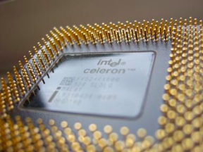

Installing Memory Modules <<
Previous Introduction to BIOS, CMOS, and Firmware
When a computer is turned on, the computer’s microprocessor uses a program called the BIOS (basic input/output system) to start the computer system. The BIOS also manages data flow between the computer's operating system and attached/connected devices, such as the hard drive, video adapter, keyboard, mouse, and printer.
開啟計算機後，計算機的微處理器會使用稱為BIOS（基本輸入/輸出系統）的程序來啟動計算機系統。 BIOS還管理計算機操作系統和已連接/已連接的設備（例如硬盤驅動器，視頻適配器，鍵盤，鼠標和打印機）之間的數據流。

A basic input/output system (BIOS) chip. Photo used under CC-BY-SA license from Uwe Hermann.
A computer’s BIOS is the most common example of firmware. Firmware is software on a chip, and is the first software run by the computer when the machine is booted up. The BIOS has several roles, including performing the power-on self-test, which tests and initializes the processor, video card, disk drives, and adapters. The BIOS also includes the low-level “operating system” for the computer, which allows the computer to take input from and give output to the most basic components, including the keyboard, mouse, and disk drives. The BIOS is stored in a ROM (Read-only memory) chip, but can be upgraded through a process call “flashing.”
While the BIOS is a program that allows the user to make changes to the settings, the settings themselves are stored in the complementary metal-oxide semiconductor, or CMOS. The CMOS is a battery-powered memory chip.
計算機的BIOS是最常見的固件示例。固件是芯片上的軟件，是計算機啟動時計算機運行的第一個軟件。 BIOS具有多個角色，包括執行開機自檢，該自檢將測試並初始化處理器，視頻卡，磁盤驅動器和適配器。 BIOS還包括計算機的低級“操作系統”，它使計算機可以從最基本的組件（包括鍵盤，鼠標和磁盤驅動器）獲取輸入並提供輸出。 BIOS存儲在ROM（只讀存儲器）芯片中，但可以通過過程調用“刷新”進行升級。
BIOS是允許用戶更改設置的程序，而設置本身則存儲在互補金屬氧化物半導體或CMOS中。 CMOS是電池供電的存儲芯片。
Understanding BIOS and CMOS